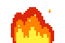
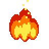
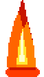
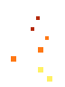
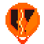

🔥 SIMULADOR EN TIEMPO REAL: ENEMIGO DEBUF FEADO
EFECTO: COMBO HÍBRIDO (RECOMENDADO)






📋 OPCIONES DE ESTILO DE EFECTO (SELECCIONA PARA PROBAR)
HAZ CLIC EN CUALQUIER TARJETA
OPCIÓN 1
✨
Tinte Térmico Naranja (Modulate)
Colorea al Zerg con un tinte naranja ígneo pulsante (`Color(1.8, 0.7, 0.2)`). 100% libre de sprites extra, ultraliviano y perfecto para enjambres masivos de 200+ zergs.
OPCIÓN 2
🔥
Llamitas a los Pies (Ground Fire)
Pequeñas llamaradas pixel art animadas danzando en la base del enemigo como si sus patas y el suelo ardieran. Excelente legibilidad sin tapar el modelo.
OPCIÓN 3
💥
Fuego Corporal (Torso Overlay)
Llamas intensas envolviendo el centro de masa del enemigo. Muestra una combustión voraz y agresiva, ideal para dar sensación de alto calor y calcinación.
OPCIÓN 4
✨
Ascuas y Chispas Volátiles
Chispas incandescentes amarillas y naranjas que se desprenden hacia arriba. Efecto elegante, sutil y táctico de fundición de armadura residual.
OPCIÓN 5
🛡️
Ícono Táctico de Armadura Rota
Escudo agrietado incandescente flotando sobre la cabeza con flechas hacia abajo estilo RTS clásico. Comunica de forma 100% matemática que el enemigo tiene menos armadura.
OPCIÓN 6 (RAGNAROK)
⚔️
Llamarada Estilo Ragnarok Online
Columna vertical de fuego ardiente continuo inspirado en el estado "Burning" / "Fire Wall" de Ragnarok Online, a juego con el stun de estrellitas del Torrasque.
RECOMENDADA
⭐
Combo Híbrido (Tinte + Ascuas + Base)
La mejor combinación: modulación naranja pulsante en el Zerg + ascuas ascendentes y pequeñas llamitas a los pies. Máxima espectacularidad y claridad visual.